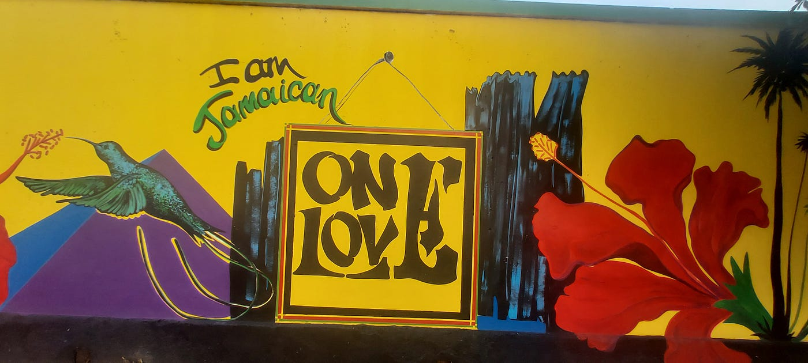

Culture!
Coming for Carnival? Here's a list of essentials to bring
During Carnival season in Jamaica, parties abound across the island.
From weekly mas camp, breakfast parties, Beach Jouvert and, of course, Road March, you'll be feting all-day long.
Here's a list of essentials to get you ready for di road!
Show More- Comfortable Sneakers
Nothing kills the vibe like sore feet. In addition to Carnival, Jamaica is a great destination for walking tours, hiking, and off-road adventure. Be sure to pack comfortable footwear so you can jump up and fete all-day long.
- Sunscreen and Sunglasses
This one is no joke. Whether you're laying out on the beach, jumping with a band, or taking it all in from the sidelines, be sure to protect your skin and eyes from the tropical sun. Bonus points for SPF lip balm.
- An old t-shirt, shorts and headband that you can do without
Jouvert is not the place for high-end designer items. Be prepared for PAINT and serious energy!
- Your trusty insulated water bottle
Staying hydrated is so important! Remember to space out drinks with lots of water.
- A Fanny Pack
Keep your essentials close and your hands free as you take in all the activities Jamaica has to offer.
- Waterproof Phone Pouch
Keep your phone safe from splashes and scratches with a handy pouch. Choose a watertight one that will allow you to try out some underwater photography!
- Portable Charger
Jamaica is a stunning island with photo opportunities around every corner. Don't get caught with a dying phone battery. Be sure to pack a portable charger for a quick re-charge so you never miss a chance for good selfie!
- Water Shoes
This is a great item to have for exploring rivers, climbing waterfalls, and checking out natural wonders like the Green Grotto Caves. You can easily scoop up a pair at any of our shops and craft markets.
That's it! Now you're ready to come back to the vibe that comes alive in Jamaica. We'll see you on road!
Experience in the Cultural & Entertainment Capital, Kingston
There is little doubt that Brand Jamaica has captured the hearts and minds of travellers across the globe. Rich cultural heritage, warm, friendly people, outstanding gastronomy, riveting sounds of the one drop reggae beat, world class athletics and beautiful land and seascapes are just a few of the things that come to mind when you think about Jamaica.
To fully experience Jamaica, is to know the intimate spaces of our island; and to be delighted by the artistic reawakening of downtown Kingston. It is to recognize the essence of the people, their laughter and their cries. Our story begins in the capital city of Kingston, the cultural and entertainment mecca and indeed, the heartbeat of the island.
I-Xplor offers a 4-day cultural experience that transports you away from the “touristy” resort towns and into the very heart of Jamaica. On this journey you can immerse yourself and revel in a perfect blend of eco and community tourism, nightlife, history, art and of course sun, sea, sand and an abundance of fun.
Day 1 - Party Like a Real Yaadie!
Jamaicans are vibes masters - consider what it would be like to party like a Jamaican; to hang out at some of the best local spots and vibe with our people like true “Yaadies”? Let us help you kick start your vacation adventure with a night on the town or as Jamaicans would say, “do road”! But first… food, and not just any food. We are taking you on a culinary journey to a bellyful of authentic Jamaican delights with your choice of perfectly seasoned jerked chicken or pork, roasted fish peppered to your liking or a rich and bubbling cup of red peas soup.
After you are satiated, get ready to move and groove all night to a diverse nightlife ranging from smooth Reggae Dub Clubs, wild Dancehall parties that keep you rocking til’ the early hours of the morning to bar hopping for drinks that will get you into the real spirit of Kingston.
Day 2 - Escape to the Blue Mountains
After a festive night, followed by some much needed rest, your tour guide will take you to Craighton Estate, nestled within the cool canopies of the Blue Mountains. Relax and enjoy the passing views as you are transported through hilly terrain to approximately 2,600 feet above sea level. See firsthand how the world renown Jamaican Blue Mountain Coffee is grown and produced. If you are a coffee connoisseur, you will know that nothing awakens the senses more than a freshly brewed cup of coffee. Sip, breathe and enjoy the panoramic vistas overlooking Kingston, the lush vegetation and the soul replenishing hum of nature through cascading waterfalls and birds calling. Enjoy lunch out in the cool, crisp air at one of the many scenic and quaint cafes nearby.
Make sure you pack your hiking shoes for a trek across a river to hear about an important aspect of Jamaica’s history from a Rastafarian Elder. Learn how the fulfillment of a prophecy made by political activist Marcus Garvey that a black king would rise to the throne in Africa to redeem the people initiated a powerful movement. Follow the recount of how the 1930 crowning of His Imperial Majesty, Haile Selassie I in Ethiopia inspired the Rastafarian movement in Jamaica and played a major role in shaping a part of the island’s culture as we know it today.
Day 3 - Sun, Sea & The Sunken City
All aboard for a tour of Port Royal, a once wealthy, thriving centre for shipping and commerce in the Caribbean, dubbed the “wickedest place on earth”, governed largely by piracy and illegal trading. Over 300 years have passed since the disaster of the 1692 earthquake and this half-sunken city is now a humble fishing village teeming with historic remnants of its infamous past. Your guide will take you to the Fort Charles Museum, where you can learn about this and more while sipping on some rum punch and enjoying the various heritage sites and the cays along the way.
Lunch is at the famous Gloria’s, where you can indulge in a wide variety of richly flavoured seafood dishes including fried and steamed fish, honey jerk shrimp and curried lobster with traditional Jamaican sides such as festival - a sweet milky fried dough and bammy - a fried or steamed starchy flat bread made from cassava and soaked in coconut milk. Of course, no visit to Jamaica is complete until you have surrendered your body to the gentle kiss of the tropical sun and the warm turquoise waters of the Caribbean Sea. Spend some beach time at the popular Lime and Maiden Cays, about a 15-minute boat ride from Port Royal then return to your hotel to recoup for your final day in Kingston.
Day 4 - The Visual Stories of Jamaica, An Art Lover’s Paradise
Wrap up your Kingston Adventure with a highlight tour of the city, including Emancipation Park, a tropical oasis in the heart of the city, noted for its bronze sculpture of the unshackled figures of a black man and woman memorializing the August 1, 1838 Emancipation Declaration. The 7-acre park is beautifully lined with lush foliage, expansive lawns, and an exercise trail. Next, a stop at the National Stadium to see statues of our many athletic icons, among them our very own sprint legend, Usain Bolt, “The Fastest Man Alive”. The highlight tour ends at Water Lane, an art lover’s dream, to take in the beautiful hand painted murals along the walls of this pedestrian street.
This carefully curated 4-day tour will leave you with an appreciation of who we are as a people and show what Jamaica has to offer over and above its popular white sand beaches and all-inclusive resorts. Experience and enjoy a fully guided tour of our Capital City, Kingston – the heartbeat of Jamaica and the Cultural Mecca of the Caribbean.